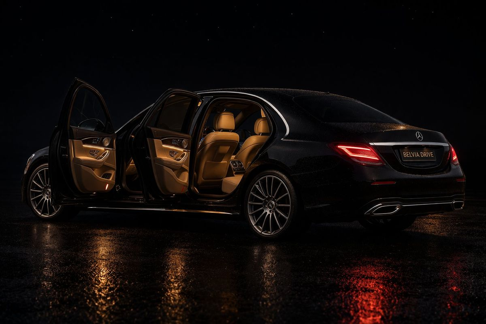

Gedaan met verrassingen op de teller. Brussel → BRU Zaventem in premium berline: 65€, tarief bevestigd vooraf reserveren. Vluchttracking inbegrepen — zelfs als uw vlucht vertraging heeft.

Uw chauffeur past zijn aankomst aan bij vertraging.
20 minuten wachttijd na de landing inbegrepen.
Wachttijd boven de 20 minuten wordt gefactureerd.
Naambordje of bedrijfslogo bij de uitgang van de aankomsthal. Hulp bij bagage inbegrepen.
Tarief bevestigd vóór de rit.
Veilige online betaling beschikbaar. Geen teller, geen toeslag voor verkeer, bagage of nacht.
Vluchten om 4 uur 's ochtends of aankomst na middernacht — Belvia Drive rijdt elk uur, elke dag.
Herinnering 24u van tevoren, melding wanneer de chauffeur onderweg is, direct nummer beschikbaar.
De chauffeur neemt uw koffers direct aan bij de terminal. Zonder moeite van uw kant.
Berline Premium. Bereken uw exacte tarief op basis van uw adres via onze simulator.
Belvia Drive haalt u thuis op vanuit elke Brusselse en Brabantse gemeente. Dit zijn de meest gevraagde ritten naar Brussels Airport (BRU Zaventem).
Gegarandeerd tarief: Deze prijzen zijn indicatief voor een Berline Premium. Bereken uw exacte tarief vanuit uw adres via onze simulator — de reservering duurt 2 minuten en de bevestiging is onmiddellijk.
Het tarief in Berline Premium bedraagt 65€ vanuit het centrum van Brussel. De prijs varieert afhankelijk van uw gemeente van vertrek en het voertuig. Vraag uw exacte tarief aan via onze simulator in 30 seconden.
We volgen uw vluchtnummer in realtime. Bij vertraging past uw chauffeur automatisch zijn vertrektijd aan. De eerste 20 minuten wachttijd na de landing zijn inbegrepen.
Uw chauffeur wacht u op in de aankomsthal met een persoonlijk naambordje. Het exacte ontmoetingspunt wordt u per SMS bevestigd vóór uw landing, afhankelijk van uw terminal.
Ja. Belvia Drive dekt Brussels South Charleroi (CRL). De rit Charleroi–Brussel duurt ongeveer 55 minuten. Tarief berline vanaf 115€. Chauffeur in de aankomsthal.
Bij een groot volume zijn de Break Comfort (5 bagagestukken) of de Van Premium (7 bagagestukken) ideaal. Onze simulator geeft automatisch de beschikbare voertuigen weer op basis van uw aantal bagagestukken.